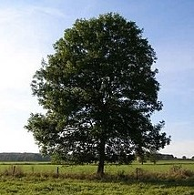
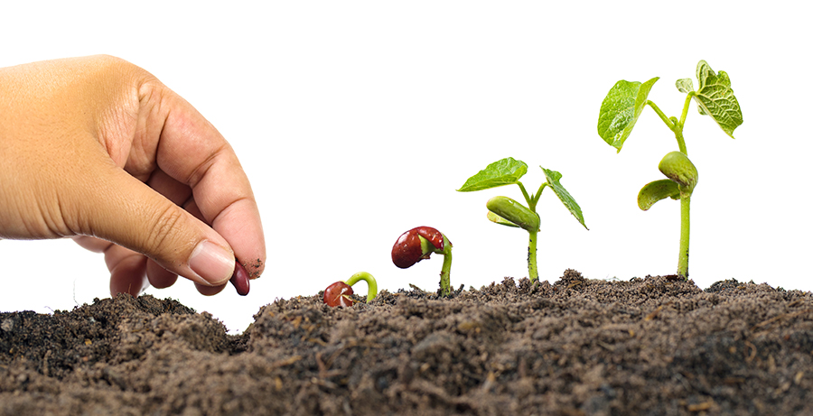

Tohum
CUM
Ana Sayfa
Tohumlar
Ürünler
İletişim
TOHUMCUM
Doğayla Buluşma Noktanız: Tohumcum
Tohumlar

Ağaç Tohumları
Doğanın döngüsünün ve yeni yaşamın başlangıcının önemli bir parçasıdır.
Çiçek Tohumları
Doğanın güzelliğini ve cömertliğini simgeler.
Sebze Tohumları
Toprağın bereketini sofralarımıza taşıyan, lezzetli ve sağlıklı besinlerin mucizevi başlangıcıdır.
Meyve Tohumları
Doğanın döngüsünün ve yeni yaşamın başlangıcının önemli bir parçasıdır.
Ürünler
30.00 TL
Palmiye Ağacı Tohumu(5 Tohum)
Genellikle ılıman bölgelerde ve tropikal alanlarda sıkça karşımıza çıkmaktadır. Ülkemizin güney kesimlerde sıkça rastlayabileceğimiz bu tür soğuğa karşıda dayanıklıdır. Boyu 60 metreye kadar uzayabilen bu bitki çok uzun ömürlüdür.
25.00 TL
Ladin Ağacı Tohumu(10 Tohum)
25-30 metreye kadar boylanabilen bu bitki 1,5 metreye kadar da çap yapabilmektedir. Asidik, kuru ve hafif rutubetli topraklarda yetişebilmektedir. Güneşli alanları sevmektedir ve don olaylarına karşı dayanıklıdır. Yağışın bol olduğu yerlerde daha hızlı büyüyebilmektedir.
25.00 TL
Krizantem Çiçeği Tohumu(25 Tohum)
Bir çeşit koleus türü olan krizantemlerin bakımı familyasındakiler gibi oldukça kolay ve zahmetsizdir. Mevsim farketmeksizin ekimi yapılabilecek olan bu tür evlerinizde saksılarda ya da bahçe ve bordürlerinize eşsiz bir hava katacaktır.
40.00 TL
Açelya Çiçeği Tohumu(10 Tohum)
Nemli ancak iyi drenaj sağlayan toprakları tercih ederler. Parçalı gölgeli ya da hafif güneş alan bölgeleri tercih ederler. Düzenli sulama ile nemli tutulmalı, ancak fazla sulanmaktan kaçınılmalıdır. Soğuk havalara karşı hassas olabilirler. Bu nedenle bazı türlerin don olaylarından korunmalıdır.
50.00 TL
Orkide Çiçeği Tohumu (10 Tohum)
Zarif ve hoş kokulu beyaz çiçekleri ile bilinen soğanlı bir bitki türüdür. Çiçekler genellikle uzun, ince saplar üzerinde açar. Uzun, ince, yeşil yapraklara sahiptir. Yapraklar genellikle çiçek sapının etrafında yoğunlaşmıştır. Yaz aylarında çiçeklenen çok yıllık bir bitki türüdür.
25.00 TL
Biber Tohumu (10 Tohum)
İnce ve çok acı yapısıyla Şili kırmızı biber, kendine has bir aromaya sahiptir.Biberler 20 cm’e kadar uzayabilir. Geniş saksıları seven bu tür, acılığıyla dünya sıralamasında yerini almıştır.
25.00 TL
Domates Tohumu (50 Tohum)
Açık tarla yetiştiriciliğine uygun, meyveleri yuvarlak yapıda parlak, kırmızı renkli, sert kabuklu ve sap kısmında hafif dilimler oluşturan bir yer domatesi çeşididir. Bol etli ve kalın kabuklu olması nakliyeye de dayanıklılık göstermesini sağlar. Bir meyvenin ortalama ağırlığı 200 ile 250 gram arasında değişir.
25.00 TL
Havuç Tohumu (200 Tohum)
Havuç kış sebzesi olarak bilinse de günümüzde 4 mevsim yetiştirilebilir. Mor(siyah), beyaz ve turuncu renklerde çeşitleri mevcut. En fazla 15-20 derece sıcaklıkta yetişebilir. Tınlı kumlu topraklarda güzel yetişir. Sulama toprak nemli kalacak şekilde yapılmalıdır. Ülkemizde Doğu Anadolu hariç tüm bölgelerde yetiştirilebilir.
25.00 TL
Ahududu Tohumu (10 Tohum)
Tatlı ve ekşi lezzetiyle hem taze olarak hem de reçel, marmelat gibi ürünlerde tüketilir. Yüksek antioksidan içeriğiyle kalp hastalığı, diyabet gibi kronik hastalıklara karşı koruma sağlar. C vitamini ve lif bakımından da zengin olan ahududu, bağışıklık sistemini güçlendirir ve sindirime yardımcı olur.
30.00 TL
Çilek Tohumu (50 Tohum)
Her bölgede kolaylıkla yetiştirilebilen verimi yüksek bir çeşittir. Ilıman bölgelerde ya da iç mekanda saksı içlerinde yıl boyunca meyve üretir. Koyu kırmızı renge ve sert meyvelere sahip, meyvenin saptan kopması kolay, sera ve açık tarla yetiştiriciliğine uygun çeşit havaların soğumasına hatta ilk donlara kadar meyve vermeye devam eder.

Bize Ulaşın
KullanıcıAdı
Email
Gönder